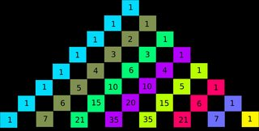

Easy Diagonal
Points: 6 kyu
Kata ID: 559b8e46fa060b2c6a0000bf
In the drawing below we have a part of the Pascal's triangle, lines are numbered from zero (top). The left diagonal in pale blue with only numbers equal to 1 is diagonal zero, then in dark green (1, 2, 3, 4, 5, 6, 7) is diagonal 1, then in pale green (1, 3, 6, 10, 15, 21) is diagonal 2 and so on.
We want to calculate the sum of the binomial coefficients on a given diagonal. The sum on diagonal 0 is 8 (we'll write it S(7, 0), 7 is the number of the line where we start, 0 is the number of the diagonal). In the same way S(7, 1) is 28, S(7, 2) is 56.
Can you write a program which calculate S(n, p) where n is the line where we start and p is the number of the diagonal?
The function will take n and p (with always: n > 0, p > 0, n > p) as parameters and will return the sum.
Examples:
diagonal(20, 3) => 5985
diagonal(20, 4) => 20349
Hint:
When following a diagonal from top to bottom have a look at the numbers on the diagonal at its right.
Ref:
http://mathworld.wolfram.com/BinomialCoefficient.html
